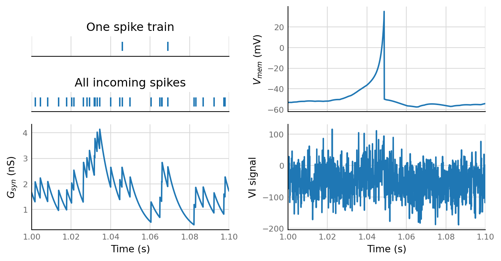
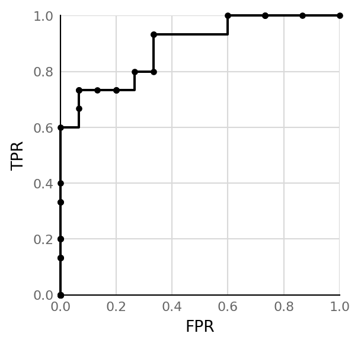

2021-01-06 • ROC
Contents
2021-01-06 • ROC¶
Calculate & draw an ROC curve for connecton detection performance in the N-to-1 simulation.
Setup¶
from voltage_to_wiring_sim.support.notebook_init import *
Preloading: numpy, numba, matplotlib.pyplot, seaborn.
Importing from submodules … ✔
Imported `np`, `mpl`, `plt`, `sns`
Imported codebase (`voltage_to_wiring_sim`) as `v`
Imported `*` from `v.support.units`
Setup autoreload
v.print_reproducibility_info()
This cell was last run by tfiers on yoga
on Mon 11 Jan 2021, at 01:52 (UTC+0100).
Last git commit (Mon 11 Jan 2021, 01:08).
No uncommitted changes
Sim¶
params = v.N_to_1_SimParams(
time_grid = v.TimeGrid(duration = 60 * second, timestep = 0.1 * ms),
num_spike_trains = 30,
p_connected = 0.5,
spike_rate = 20 * Hz,
Δg_syn = 0.8 * nS,
τ_syn = 7 * ms,
neuron_params = v.neuron_params.cortical_RS,
imaging_spike_SNR = 2,
);
sim_data = v.N_to_1_simulation.simulate(params);
v.pprint(sim_data, values=False)
N_to_1_SimData
--------------
spike_trains : NDArray[(num_spike_trains,), SpikeTimes]
is_connected : NDArray[(num_spike_trains,), bool]
all_incoming_spikes: SpikeTimes
g_syn : Signal
izh_output : IzhikevichOutput
VI_signal : Signal
zoom = params.time_grid.zoom(start=1 * second, duration=0.1 * second);
v.N_to_1_simulation.plot(sim_data, zoom)

Permutation tests¶
from tqdm import tqdm as timed_loop
test_data = []
test_summaries = []
for spike_train in timed_loop(sim_data.spike_trains):
data, summary = v.test_connection(spike_train,
sim_data.VI_signal,
window_duration=100 * ms,
num_shuffles=100)
test_data.append(data)
test_summaries.append(summary)
100%|██████████| 30/30 [00:01<00:00, 23.66it/s]
Classify as connected¶
def apply_threshold(connection_test_summaries, p_value_threshold):
is_classified_as_connected = np.array(
[summary.p_value < p_value_threshold
for summary in connection_test_summaries]
)
return is_classified_as_connected
is_classified_as_connected = apply_threshold(test_summaries, p_value_threshold = 0.1)
array([ True, True, True, True, False, True, False, False, True,
False, True, True, False, True, True, False, False, False,
False, False, True, False, False, False, False, False, False,
False, False, False])
Evaluate classification¶
def evaluate_classification(is_classified_as_connected, is_connected):
is_TP = is_classified_as_connected & is_connected
is_FP = is_classified_as_connected & ~is_connected
is_TN = ~is_classified_as_connected & ~is_connected
is_FN = ~is_classified_as_connected & is_connected
num_TP = np.sum(is_TP)
num_FP = np.sum(is_FP)
num_TN = np.sum(is_TN)
num_FN = np.sum(is_FN)
TPR = num_TP / (num_TP + num_FN)
FPR = num_FP / (num_FP + num_TN)
return ClassificationEvaluation(
is_TP, is_FP, is_TN, is_FN, num_TP, num_FP, num_TN, num_FN, TPR, FPR
)
# boilerplate: (programming lang should generate this automatically)
from dataclasses import dataclass
from nptyping import NDArray
from typing import Any
NumSpikeTrains = Any
IndexArray = NDArray[(NumSpikeTrains,), bool]
@dataclass
class ClassificationEvaluation:
is_TP: IndexArray
is_FP: IndexArray
is_TN: IndexArray
is_FN: IndexArray
num_TP: int
num_FP: int
num_TN: int
num_FN: int
TPR: float
FPR: float
# test
classification_eval = evaluate_classification(is_classified_as_connected, sim_data.is_connected)
v.pprint(classification_eval)
ClassificationEvaluation
------------------------
is_TP = array([ True,...False, False])
is_FP = array([False,...False, False])
is_TN = array([False,... True, True])
is_FN = array([False,...False, False])
num_TP = 10
num_FP = 1
num_TN = 14
num_FN = 5
TPR = 0.6667
FPR = 0.06667
Sweep threshold¶
from typing import List
@dataclass
class ThresholdResult:
p_value_threshold: float
is_classified_as_connected: IndexArray
evaluation: ClassificationEvaluation
ThresholdSweep = List[ThresholdResult]
def sweep_threshold(connection_test_summaries, sim_data):
results = []
for p_value_threshold in np.logspace(-3, 0):
is_classified_as_connected = apply_threshold(connection_test_summaries, p_value_threshold)
evaluation = evaluate_classification(is_classified_as_connected, sim_data.is_connected)
results.append(ThresholdResult(p_value_threshold, is_classified_as_connected, evaluation))
return results
threshold_results = sweep_threshold(test_summaries, sim_data);
ROC curve¶
p_value_thresholds = [threshold_result.p_value_threshold for threshold_result in threshold_results]
TPRs = [threshold_result.evaluation.TPR for threshold_result in threshold_results]
FPRs = [threshold_result.evaluation.FPR for threshold_result in threshold_results]
fig, ax = plt.subplots()
ax.step(FPRs, TPRs, 'k.-', where='post', clip_on=False)
ax.set_aspect('equal')
ax.set(xlabel="FPR", ylabel="TPR", xlim=(0,1), ylim=(0,1));

Reproducibility¶
v.print_reproducibility_info(verbose=True)
This cell was last run by tfiers on yoga
on Thu 07 Jan 2021, at 13:35 (UTC+0100).
Last git commit (Thu 07 Jan 2021, 13:19).
Uncommited changes to:
M notebooks/2021-01-06__ROC.ipynb
Platform:
Windows-10
CPython 3.8.5 (C:\conda\python.exe)
Intel(R) Core(TM) i7-10510U CPU @ 1.80GHz
Dependencies of voltage_to_wiring_sim and their installed versions:
numpy 1.19.2
matplotlib 3.3.3
numba 0.52.0
seaborn 0.11.1
scipy 1.6.0
scikit-learn 0.24.0
preload 2.2
py-cpuinfo 7.0.0
nptyping 1.4.0
tqdm 4.55.1